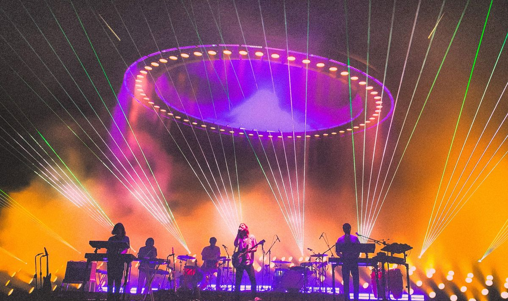

Tame Impala é o projeto de Kevin Parker que une psicodelia nostálgica e produção pop meticulosa, criando paisagens sonoras que transitam do lo-fi etéreo ao synth-pop luxuoso. Seu som fomentou o renascimento da música psicodélica, conquistando ouvintes com atmosferas hipnóticas e grooves de pista.
A banda atualmente é composta por:
- Kevin Parker
- Jay Watson
- James Ireland
- Cam Avery
- Dominic Simper
- Julien Barbagallo
Todas as músicas são inteiramente compostas, roteirizadas, gravadas e tocadas por Kevin Parker e o restante da banda apresenta somente em shows e turnês onde tudo não pode ser feito apenas por uma pessoa
Entre os maiores sucessos da banda estão as seguintes músicas:
- The Less I Know The Better
- Borderline
- Let It Happend
- New Person, Same Old Mistakes
- Feels Like We Only Go Backwards
Para saber mais sobre a banda clique aqui
Para ler a biografia de Kevin Parker clique aqui
